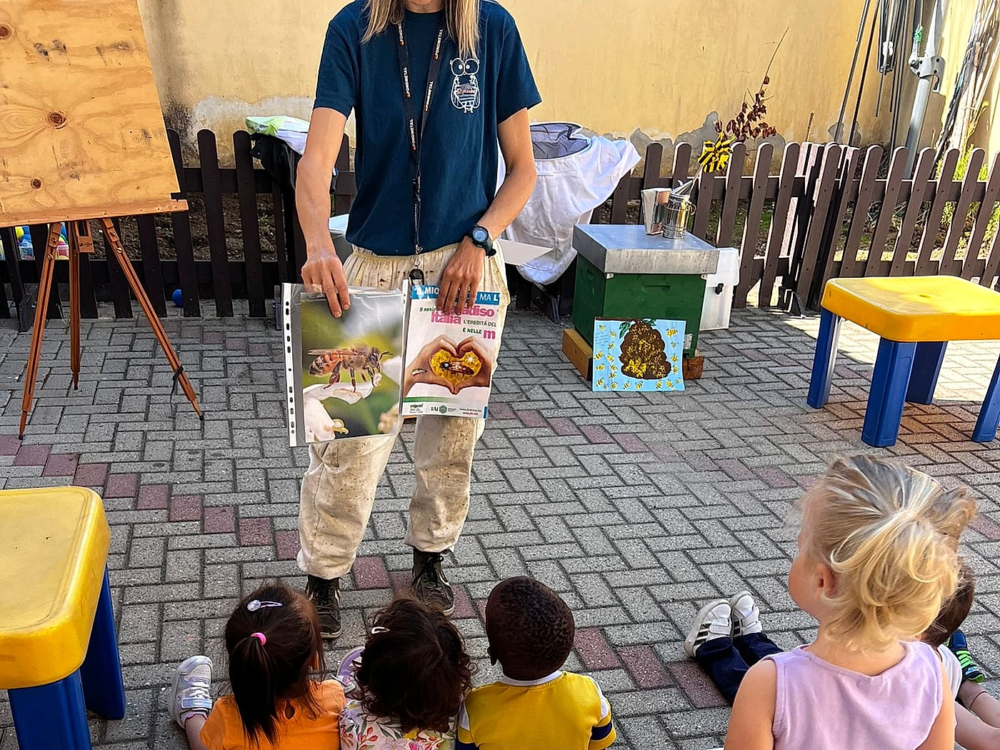
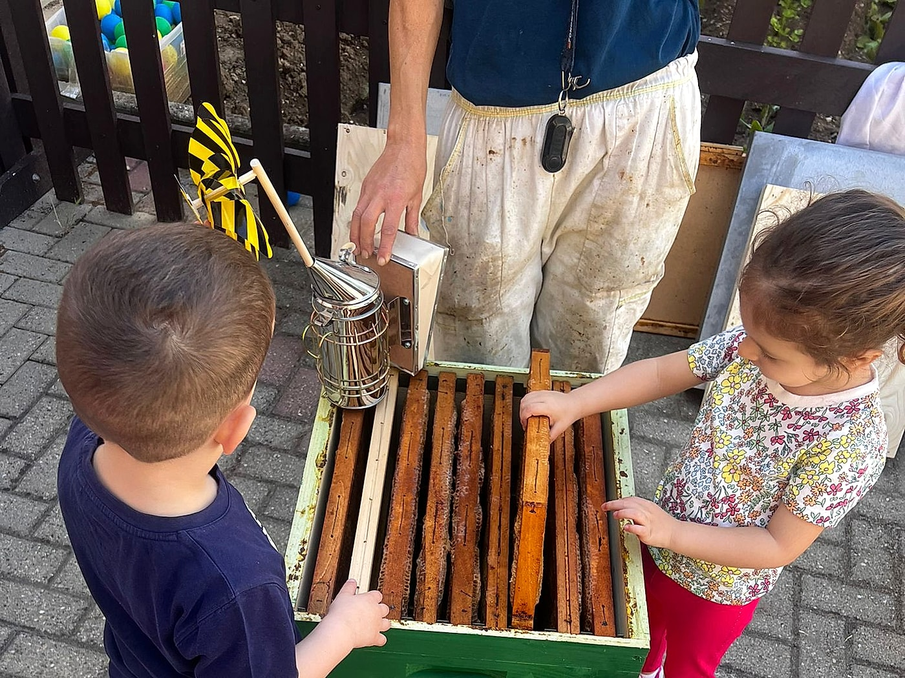
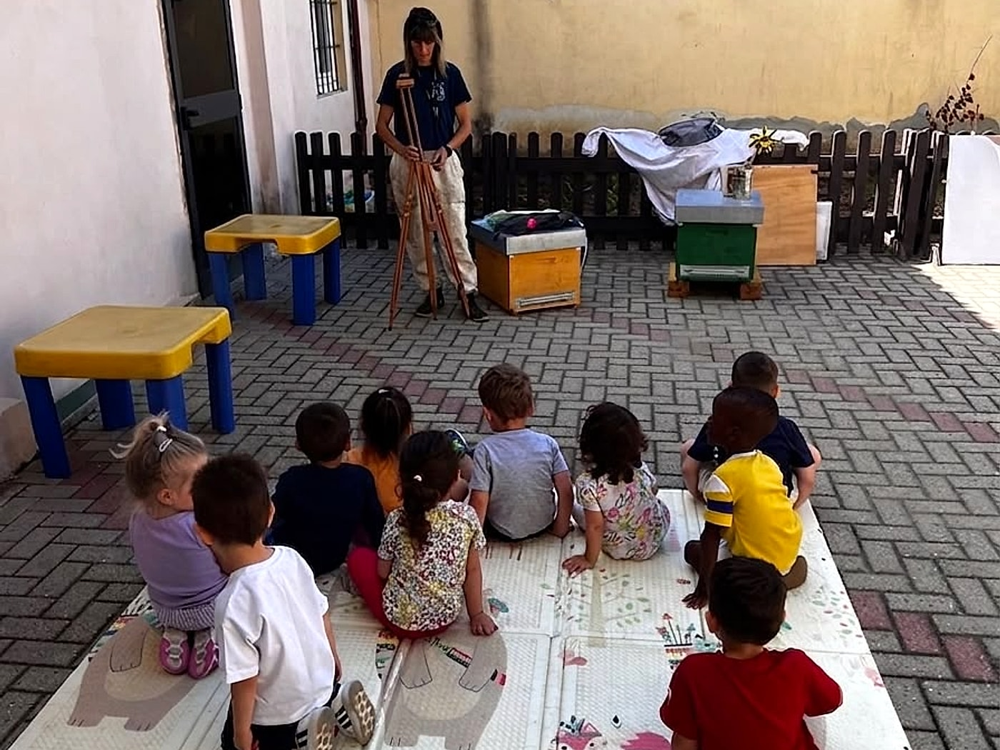
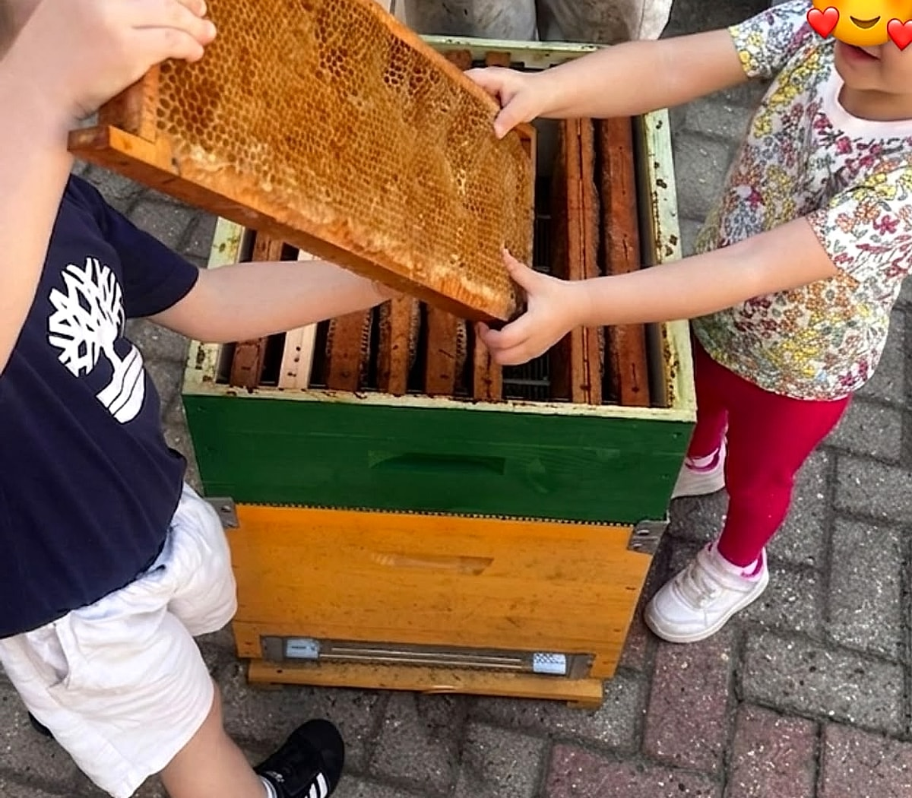
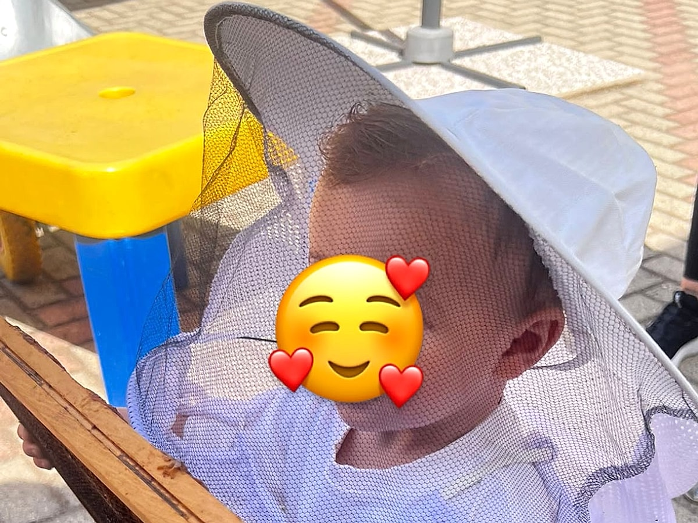
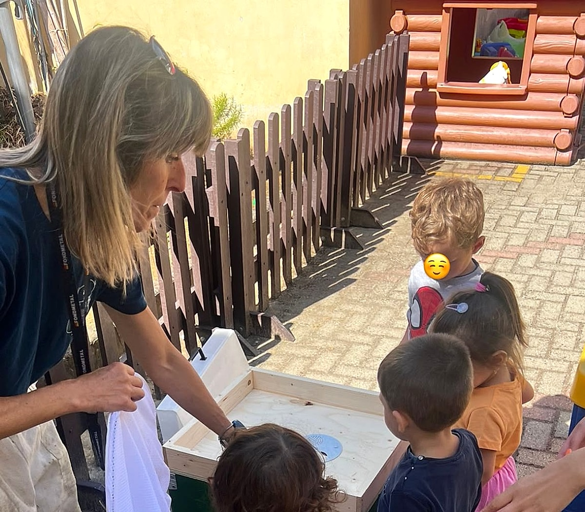
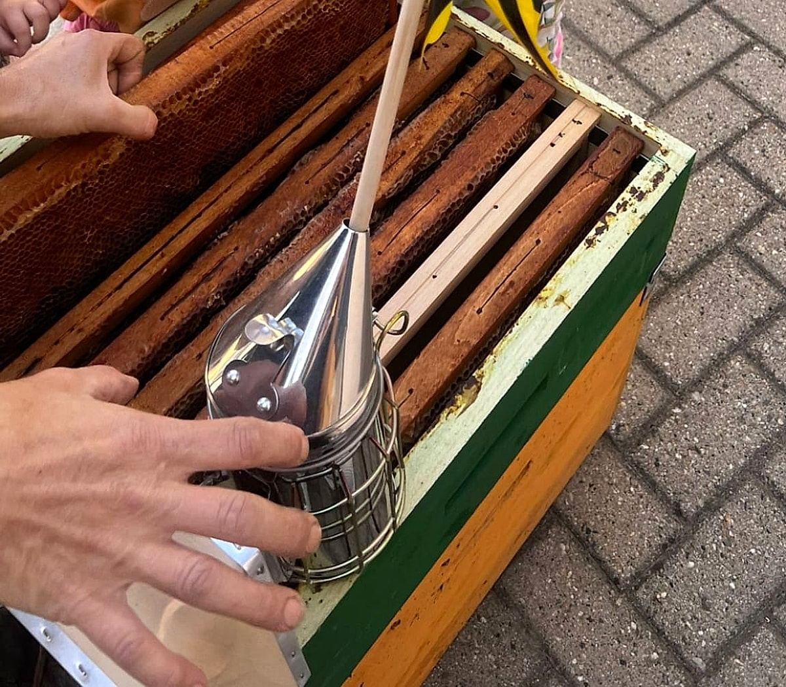

Laboratori Didattici ed Esperienze con le Api
Portiamo la magia dell'alveare nelle scuole, negli asili e nel nostro apiario: un viaggio educativo a misura di bambino per imparare ad amare e rispettare la natura.

Il Nostro Progetto per i Bambini
Insegnare ai bambini l'importanza delle api e del loro prezioso lavoro è al centro della nostra missione. Attraverso le nostre lezioni interattive all'aperto, tavole illustrate e racconti pensati per la loro età, avviciniamo i più piccoli al mondo della natura mostrando come un insetto così piccolo sia fondamentale per la biodiversità.
Il progetto stimola nei bambini consapevolezza ambientale, meraviglia e rispetto verso gli ecosistemi che ci circondano, in un clima di gioco, ascolto e scoperta sensoriale.

Esperienze Pratiche Indimenticabili
Durante i nostri laboratori, i bambini vestono i panni dei veri apicoltori: indossano le mascherine protettive a loro dedicate, osservano l'affumicatore e toccano con mano una vera arnia didattica e i telaini costruiti dalle api con la cera profumata.
Attraverso l'esplorazione diretta dei favi e la scoperta dei ruoli della famiglia (dall'ape operaia fino all'Ape Regina), ogni incontro si trasforma in un ricordo indelebile.
- Sicurezza Prima di Tutto: I laboratori con le arnie didattiche si svolgono in totale sicurezza con attrezzature adatte anche ai bimbi più piccoli.
- Apprendimento Tattile e Sensoriale: Toccare i telaini di cera, annusare il profumo del propoli e osservare da vicino gli strumenti dell'apicoltore.
- Degustazione Finale: Imparare a riconoscere i profumi dei fiori assaggiando il nostro miele artigianale!

Per Asili, Scuole, Centri Estivi e Famiglie
Organizziamo incontri didattici direttamente presso asili nido, scuole dell'infanzia, scuole primarie e centri estivi, portando con noi le nostre arnie didattiche colorate, i telaini, le tute e tutto il materiale educativo.
Su prenotazione accogliamo anche gruppi e famiglie per visite guidate nel nostro apiario tra le colline di Montecalvo Versiggia.
I Momenti Più Belli dei Nostri Laboratori
La curiosità, il sorriso e l'entusiasmo dei bambini mentre scoprono da vicino il mondo delle api.

Il Tesoro del Favo
I bambini sollevano insieme un vero telaino costruito dalle api, scoprendo le cellette esagonali di cera.

Piccoli Apicoltori
Con il cappello dotato di rete protettiva e un vero telaino tra le mani, ogni bimbo diventa apicoltore per un giorno.

Dentro l'Alveare
Scopriamo pezzo per pezzo come è fatta la casetta delle api, dal nido al melario.

Gli Strumenti
L'affumicatore e i telaini da toccare da vicino per imparare con tutti i cinque sensi.